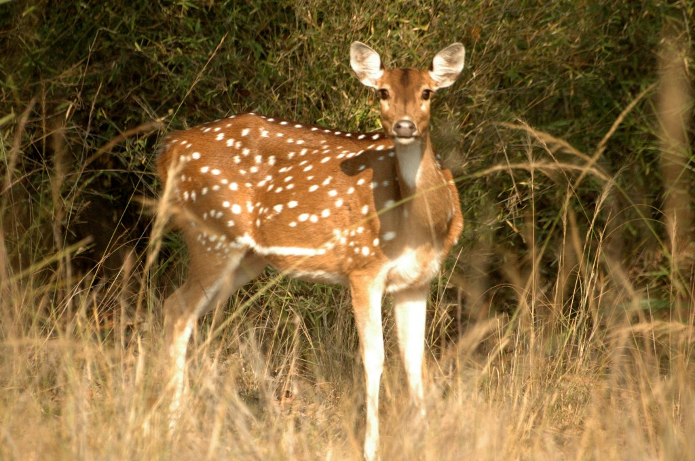

Spotted Deer
-
Scientific name: Axis axis
Status: Least Concern(but population decreasing)
Weight: 36 kg (Adult)
Size: About 35 inches
Population: Fewer than 2300
Habitat: They prefer dense deciduous forests, semi-evergreen forests, and open grasslands. They also prefer heavy forest cover for shade.
Diet: Grazers as well as browsers, the chital mainly feed on grasses throughout the year. They prefer young shoots, in the absence of which, tall and coarse grasses are nibbled off at the tips.